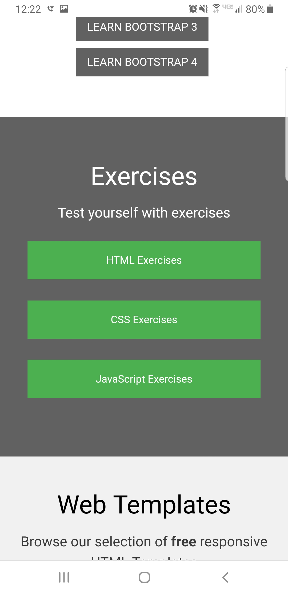
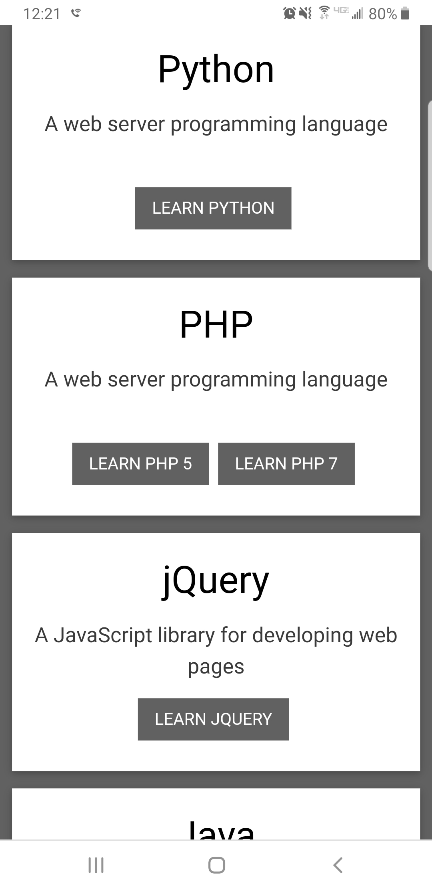
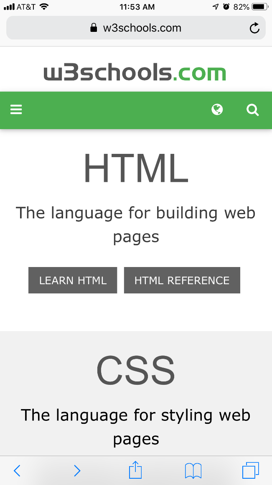
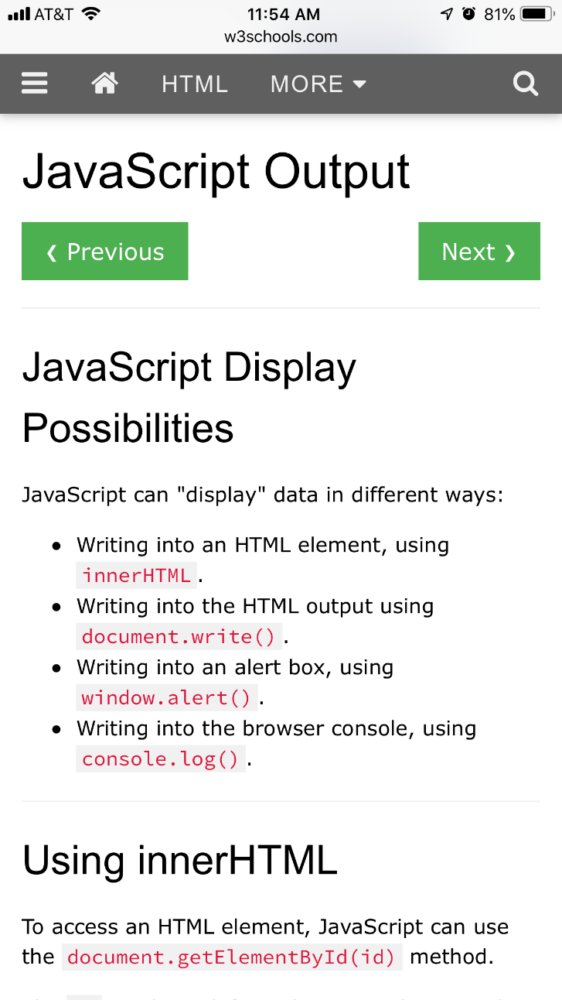

Design - Analysis Assessment
www.w3schools.com
Design Principles
Proximity —
Alignment — Daniel Eckton
The alignment being used throuhout the main page on w3schools.com is center alignment. The use of center alignment in this case gives the page a very uniform and clean look. Center alignment in this case is well executed due to the lack of variation in the size of the objects that are being aligned. For example, looking at all the text, you notice that the length of each of the blocks of text are very close to eachother. If there were significantly larger blocks of text, mixed in with the smaller ones, the center alignment might not be as appealing as it is in the case shown.
Repetition — Daniel Eckton
The repetition being used in this section of the webpage highlights the similarity and the consistency of each of the blocks. Each block contains a Title, being Python or jQuery, a description of the title, and then a simple link that leads to a page in which the user can learn more. The repitition of this format, connects all these blocks as one. As does the similarity in the design aspects, such as the typefaces used, as well as the colors and shapes of each of the elements.
Contrast —
Typography — Vova Zhdanov
At W3schools we can see that they are using unique font for the name of the site, it is always the same and you can identify the website by the font. They use this font as branding for their website.
w3school is a website for people who want to learn something about coding, and developers of the website did a really good job with typography they are using a font that most of IDE uses for programming. It helps users to find the information they looking for on the page faster.
Site Purpose Statement
To provide learning web designers and web developers with a simple platform to learn about and practice using different bits of code.
Target Audience
- Age: 16-45
- Occupation: Learning Web Designer and Developer
- Income: 20k-50k
- Other:
Persona
- Name: Jeremy McCullen

- Occupation: Intern at a local Web Design Firm
- Primary Device: Mac Book
- Quote: Oh no, I've forgotten how to add things to Javascript! I'll visit w3schools.com to find out how to do that.